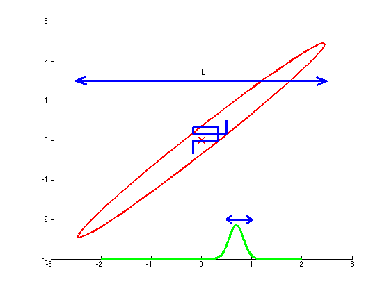

Mu = zeros(1,2);
Sigma = [1,0.99;0.99,1];
hold on;
axis([-3 3 -3 3])
gaussPlot2d(Mu,Sigma,'-plotMarker','false');
x1 = [-2:0.01:2];
x2obs = 0.7;
mux1Cond = Mu(1) + Sigma(1,2)/Sigma(2,2) * (x2obs - Mu(2));
varx1Cond = Sigma(1,1) - Sigma(1,2)^2 / Sigma(2,2);
plot(x1,normpdf(x1,mux1Cond,sqrt(varx1Cond))*0.3-3,'g','linewidth',3);
blueSeq = [
-1/2,-1;
-1/2,0;
1,0;
1,1;
-1/2,1;
-1/2,1/2;
1.5,1/2;
1.5,1.5;
]/3;
for k=1:(size(blueSeq,1)-1)
plot(blueSeq(k:(k+1),1),blueSeq(k:(k+1),2),'b','linewidth',3);
end
line([-2.5,2.5],[1.5,1.5],'linewidth',3);
line([-2.5,-2.3],[1.5,1.6],'linewidth',3);
line([-2.5,-2.3],[1.5,1.4],'linewidth',3);
line([2.5,2.3],[1.5,1.6],'linewidth',3);
line([2.5,2.3],[1.5,1.4],'linewidth',3);
text(0,1.7,'L');
line( [0.5,1], [0,0] - 2,'linewidth',3) ;
line([0.5,0.6],[0,0.1] - 2,'linewidth',3);
line([0.5,0.6],[0,-0.1] - 2,'linewidth',3);
line([1,0.9],[0,0.1] - 2,'linewidth',3);
line([1,0.9],[0,-0.1] - 2,'linewidth',3);
text(1.2,-2,'l');
hold off;
print('bishop-gibbs-gauss.pdf');
